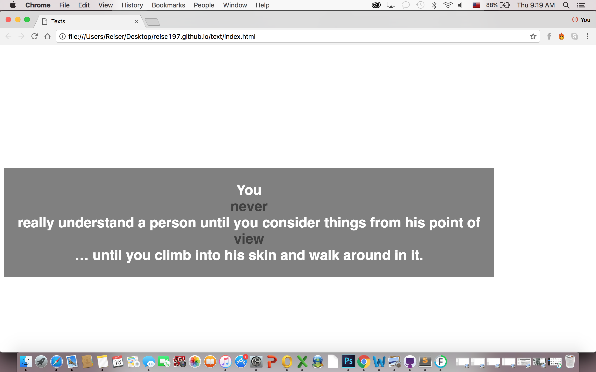
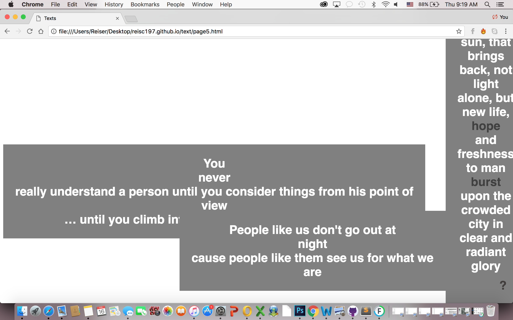
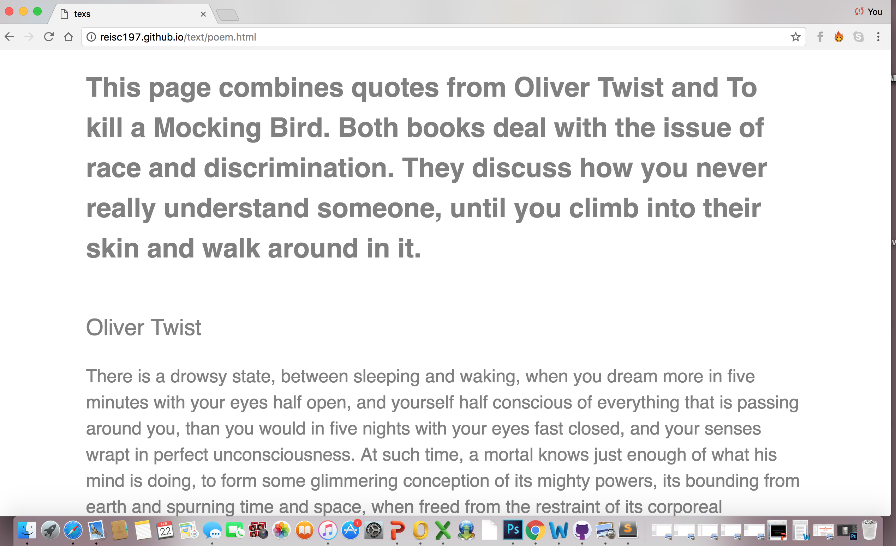
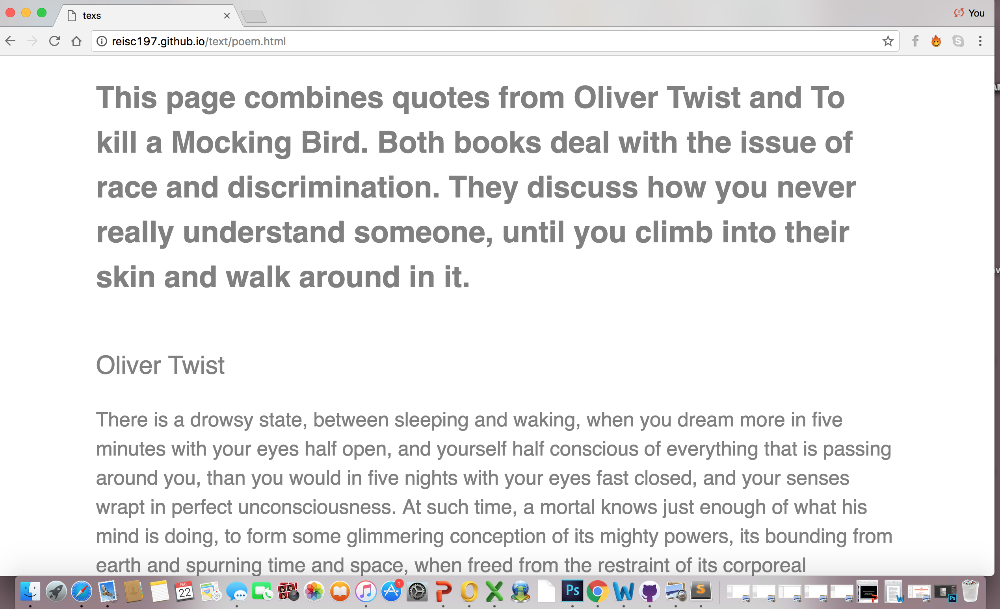

My project deals with quotes from the books To Kill a Mocking Bird and Oliver Twist. Both of these books deal with the problem of race and discrimination, and follow the main characters as they deal with these issues.
My site begins with a simple quote inside of a grey box. The grey box that holds the text is symbolizing how one is enclosed in a grey area when it comes to the matter of discrimination. There are two words that are a different color from the rest of the sentence. When you hover over these two words they change color, showing the user that it can be clicked one. Once it is clicked, another text box shows up with a different sentence. These sentences are combined; depending on which word you click, a different sentence comes up. The boxes start to overlay over each other, creating new sentences as it goes, because the boxes cover some parts of the other boxes.
This can seem to be sort of overwhelming or confusing for the user. They pop up in a very in your face manner. After you click through the first boxes, a question mark shows up in the corner of the page. When you click the question mark, you are taken to a clean and organized page. This page explains what is happening. Then you can go back and click through until the boxes cover the entire screen, and it circles back to the beginning.
 
